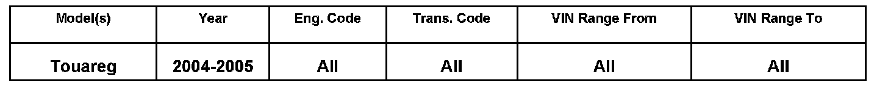
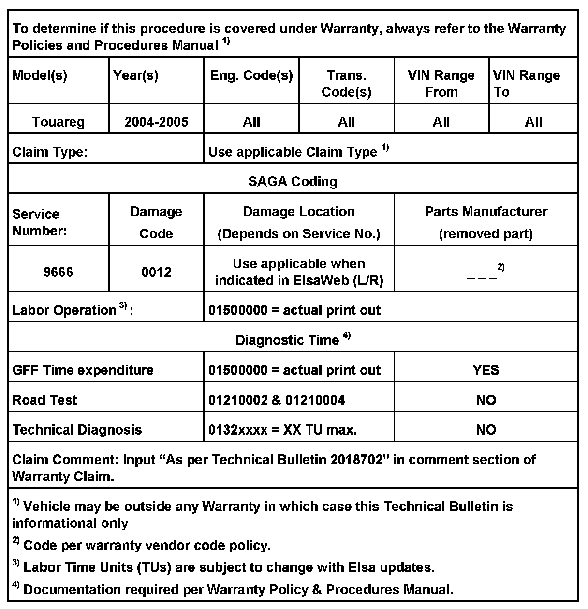
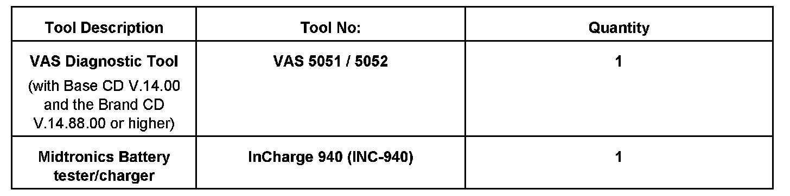

Keyless Start System - No Start After Module Replacement
96 08 05Oct. 16, 2008
2018702

Vehicle Information
Condition
No Start after Access Start Module Replacement
Vehicle towed in for no start condition after recent Access Start Module Replacement (Kessy).
Technical Background
Incorrect access start module installed in vehicle.
Production Solution
No production change required.
Service
Procedure
- Connect VAS 5051/5052.
- Scan vehicle for trouble codes.
NOTE:
If trouble codes exist, this technical bulletin DOES NOT apply.
If no communication with vehicle:
- Apply brake pedal and attempt to communicate with access start module.
If unable to communicate with access start module, perform the following:
- Remove the SB41 fuse for approximately 10 seconds, then reinstall.
- Check if the vehicle starts and runs.
Tip:
If vehicle starts and runs it is likely the incorrect suffix access start module was replaced.
- Install correct suffix access start module.
NOTE:
If the vehicle does not start, this technical bulletin DOES NOT apply.
Tip: To correctly identify correct part number in ETKA, the following is needed:
- Last 8 of VIN code
- Engine PR Code ( Example BAR, BKW, AXQ)
- Door lock PR code ( Example 5D2, 5D3)
NOTE:
DO NOT use VIN lookup feature or production dates to look up an access start module. There is overlapping usage during production periods.
To determine correct part number, perform the following steps in order when searching in ETKA.
1. Find out if a VIN range is relevant to the vehicle in question.
- Engine PR codes of BKS, BHK, BHL, and BAR DO NOT have a VIN range
- Engine PR Codes of BKW, BLE, BMX, BAA, and AXQ DO have a VIN range
2. If Engine PR code relates to a VIN range, Compare the last 8 of the vehicle VIN in question to find out if its before or after VIN 7L_4D039016.
3. Go to the appropriate section in ETKA. Use the door lock PR code to determine correct part number.

Warranty

Required Parts and Tools
No Special Parts required.
Additional Information
All part and service references provided in this Technical Bulletin are subject to change and/or removal. Always check with your Parts Dept. and Repair Manuals for the latest information.